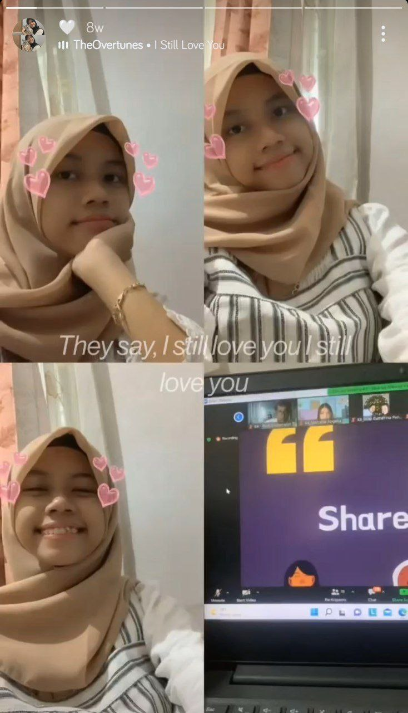
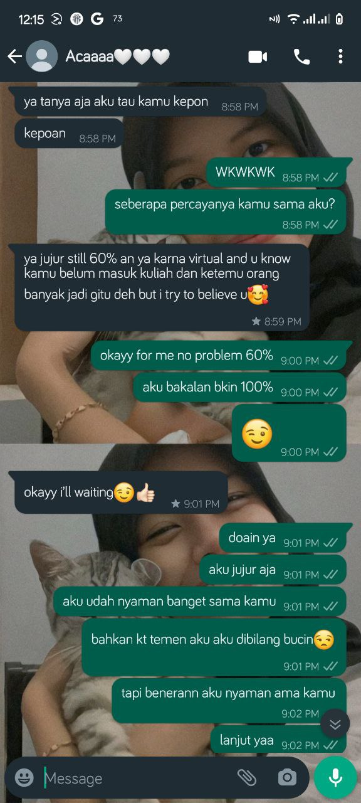
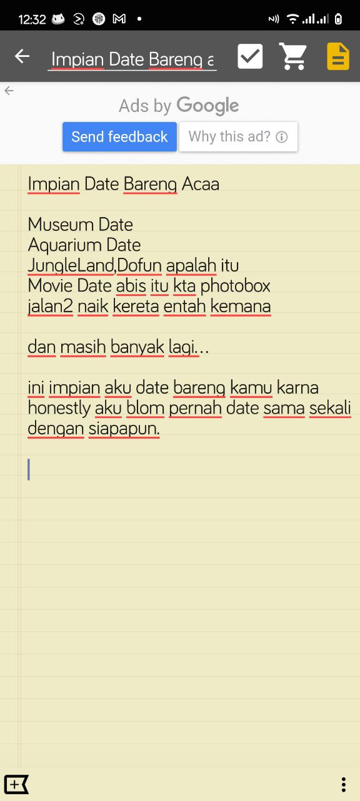
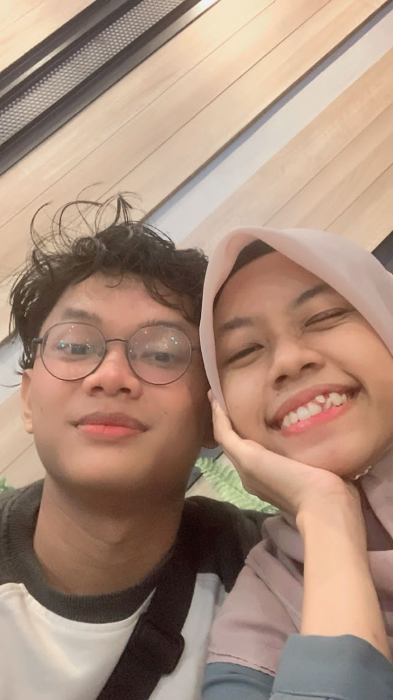

First Pap

5/27/22, 12:50 PM - Kahfi Fauzan: iyaa sayang
5/27/22, 12:50 PM - Kahfi Fauzan: aku di konciin juga lagi
5/27/22, 12:50 PM - Kahfi Fauzan: selamat istirahat
5/27/22, 12:51 PM - Kahfi Fauzan: alhamdulillah
5/27/22, 1:09 PM - Kahfi Fauzan: sayangg, aku bkin sw boleh ga??
5/27/22, 1:09 PM - Kahfi Fauzan: Media omitted
5/27/22, 4:12 PM - Acaaaa🤍🤍🤍: YALLAH DIBIKININ GITUAN
5/27/22, 4:13 PM - Acaaaa🤍🤍🤍: akunya baru bangun loh udh di kasi suprise :)
5/27/22, 4:13 PM - Acaaaa🤍🤍🤍: EHHEHEHEHEH MAKASSIIII
5/27/22, 4:13 PM - Acaaaa🤍🤍🤍: luv uuu 🤍
5/27/22, 8:16 PM - Kahfi Fauzan: mwehehehe
5/27/22, 8:16 PM - Kahfi Fauzan: ayanggg
5/27/22, 8:26 PM - Acaaaa🤍🤍🤍: yes babee
5/27/22, 8:26 PM - Kahfi Fauzan: bagus kan sw aku
5/27/22, 8:26 PM - Acaaaa🤍🤍🤍: YAALLAH DI SW DONG
5/27/22, 8:26 PM - Acaaaa🤍🤍🤍: Media omitted
5/27/22, 8:26 PM - Kahfi Fauzan: 😖
5/27/22, 8:26 PM - Acaaaa🤍🤍🤍: AAA MAYUU🫠
5/27/22, 8:26 PM - Kahfi Fauzan: tdnya mau sg
5/27/22, 8:26 PM - Kahfi Fauzan: tp nanti aja
5/27/22, 8:26 PM - Kahfi Fauzan: 😌
5/27/22, 8:27 PM - Acaaaa🤍🤍🤍: AAAA MELENYOT I CANT🫠
5/27/22, 8:27 PM - Acaaaa🤍🤍🤍: btw how was ur day??
5/27/22, 8:27 PM - Acaaaa🤍🤍🤍: kamu masi sendirian?
5/27/22, 8:27 PM - Acaaaa🤍🤍🤍: udah makan belum?
5/27/22, 8:27 PM - Kahfi Fauzan: aku udah ga sendirian kan ada kamu
5/27/22, 8:27 PM - Kahfi Fauzan: good .
Bahagia ternyata sesederhana itu, untuk pertama kalinya setelah sekian lama tidak merasakan jatuh cinta, hatiku takluk terhadap Perempuan bernama Haliza Fasya Lathifa.
Terimakasih Sayang, Percayalah aku sangat mencintaimu. No matter what they say i still love u.
First Call
.jpeg)
Yapp, tanggal 6 juni adalah first call kita, aku yang masih malu2 manggil kamu sayang tapi kamu langsung to the point manggil aku sayang
Kaget Sih, karna aku takut kamu udah punya pasangan pada saaat itu, aku gaberani ngucapin sayang dluan lewat telfon, tapi kamu bilang gapunya pasangan, itu buat aku jadi seneng, karna aku jatuh hati sama kamu.
Kamu manggil aku ayang, aku manggil kamu sayang. apalagi suara hmm kamu yang bikin aku candu + kangen.....
btw yang, kapan nih kita video call? wkwkwkwk
Truth Or Dare

Aku sengaja ngajak main tod karna aku beneran pengen buka-bukaan sama kamu perihal perasaan, masalalu dan sebagainya.
Aku gapermasalahin kamu percaya sama aku masih 60% karena emang kita LDR, tapi aku bakal ngeyakinin 100%
yaa intinya yang sekarang aku berusaha dan belajar lebih baik buat jadi pasangan kamu. berusaha selalu ada untuk kamu kalau lagi down dan sebagainya
aku ada disamping kamu yang, iya kita masih virtual, tapi jiwa aku ada di kamu.
oh iya sayang, makasih ya kamu as always ada buat aku saat aku down dan sebagainya. makasih banyak sayang!!
Date

Ini impian date aku yang, bismillah aja semoga terwujud, yaa aku tau tahun depan kamu pasti sibuk dengan akhir semester kamu
karena kamu sebentar lagi lulus kuliah, dan aku baru masuk kuliah
semoga terwujud date kita. aamiin
First Date

24 Agustus First Date kitaaaa. Finally! aku happy banget bisa date sama kamu. bener2 se happy itu. I love you so much
bulan September dan seterusnya kita semua bakalan sibuk dengan tugas kuliahan. Jangan lupa selalu kasih kabar satu sama lain. waktunya libur kita ngedate.
Harapan aku kedepannya bisa terus sama-sama dalam hal apapun. Yang pasti kita jalanin yang sekarang. See you di bulan desember 2022 atau januari 2023 ayanggg